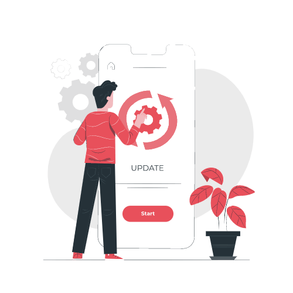
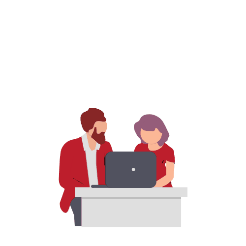
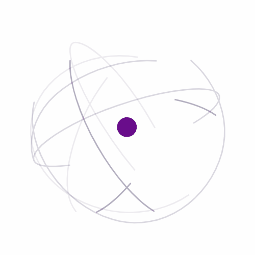

Welcome to StartupwalaCA
Start your Own Business through app
Skip
Creative thinking achieves the growth of the company at the best level

Skip
Ups and downs comes but having the patience can achieve the goals
Already got it
Skip
Skip
Already got it